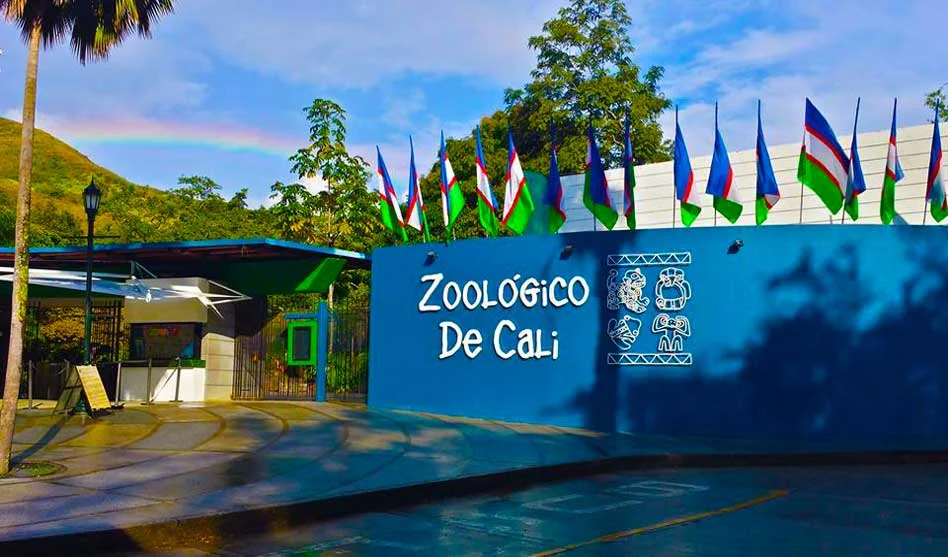
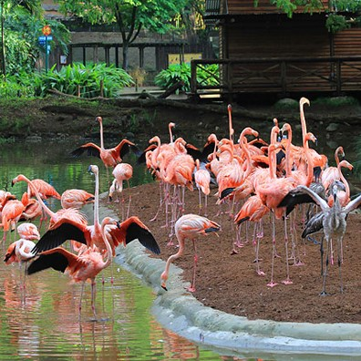
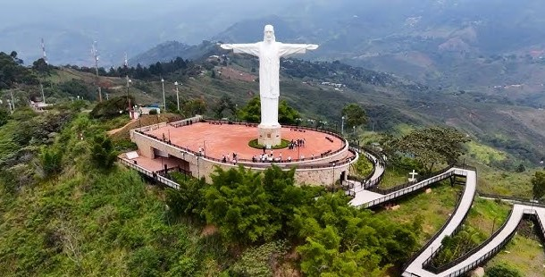
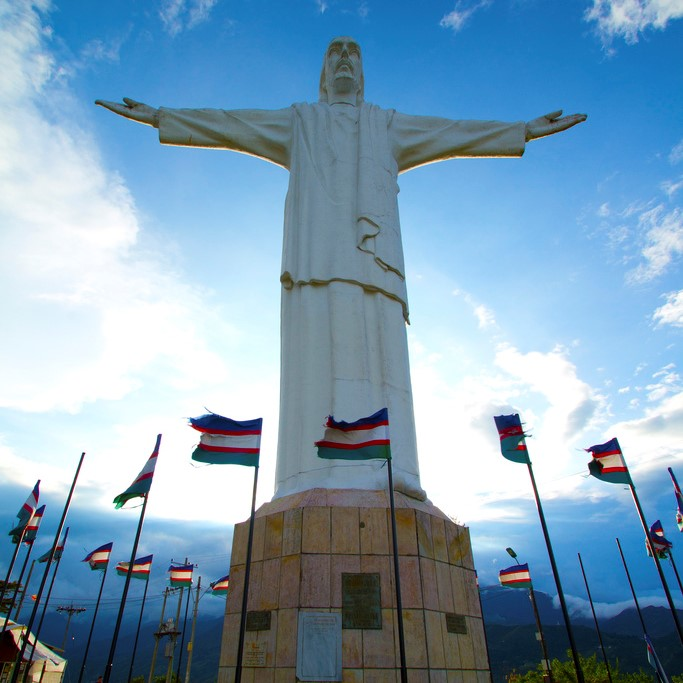
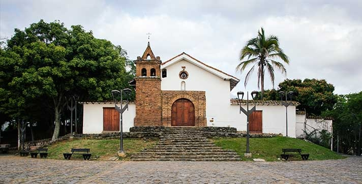
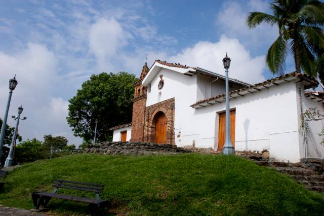
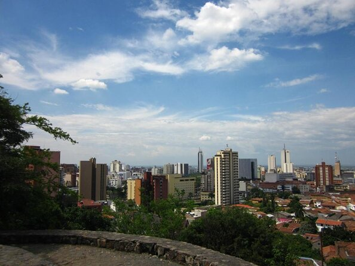

Cali cuenta con una serie de lugares turísticos que reflejan su diversidad cultural y natural.
La ciudad ofrece espacios históricos, parques naturales, museos, y una vibrante vida nocturna.
Además, es conocida por su arquitectura colonial, centros de entretenimiento y zonas verdes,
perfectas para quienes buscan un contacto directo con la naturaleza.
Algunos de los lugares turisticos más conocidos de de la ciudad de Cali son:
Zoológico de Cali
Cristo Rey
San Antonio
|  |
|
El zoológico de Cali es un parque zoológico fundado en el año de 1969 ubicado en la ciudad colombiana de Santiago de Cali, Colombia. El parque cuenta con alrededor de 2500 animales de 233 especies, entre anfibios, mamíferos, reptiles, aves, peces y mariposas. Este zoológico promueve y ejecuta diversos programas educacionales, recreacionales e investigativos para ayudar a preservar la biodiversidad colombiana y crear conciencia ambiental entre la sociedad. |
 |
|
El zoológico de Cali se destaca por sus esfuerzos en la rehabilitación de especies nativas en peligro de extinción. Entre sus programas más destacados se encuentran los de reproducción de especies como el cóndor de los Andes. Además, ha implementado senderos ecológicos y jardines botánicos que permiten a los visitantes disfrutar de la flora autóctona mientras aprenden sobre la importancia de su conservación. Las instalaciones del zoológico están diseñadas para ofrecer un ambiente natural y seguro tanto para los animales como para los visitantes, promoviendo una experiencia educativa y recreativa. |
Video Informativo
Más información sobre el zoologico de Cali:
Pagina Oficial
Zoológico de Cali - Wikipedia
Ubicación
|  |
|
El Cristo Rey es una estatua de 26 metros de altura, ubicada en el Cerro los Cristales a 1440 metros sobre el nivel del mar, en el corregimiento Los Andes, al occidente de Santiago de Cali, Colombia. Esta imponente obra, diseñada por el escultor italiano Alideo Tazzioli, fue inaugurada en 1953, en conmemoración de los cincuenta años tras el final de la Guerra de los Mil Días. Es una estructura monumental de hierro y hormigón que no solo resalta por su imponencia, sino también por su valor artístico. |
|
Actualmente, Cristo Rey atrae anualmente a 290.000 turistas locales y extranjeros. |
 |
Video Informativo
Más información sobre Cristo Rey:
Cristo Rey - Wikipedia
Ubicación
|  |
|
San Antonio es uno de los barrios más antiguos y pintorescos de Cali, conocido por su arquitectura colonial y calles empedradas. En el centro del barrio se encuentra la capilla de San Antonio, un templo de estilo barroco. El área es también famosa por su vida cultural, con numerosos teatros, cafés, y galerías de arte. Es un lugar popular tanto para locales como para turistas debido a su ambiente bohemio y vistas panorámicas de la ciudad. |
 |
|  |
Los miradores de San Antonio son puntos estratégicos para disfrutar de panorámicas únicas de Cali. Desde ellos, se puede observar cómo la ciudad se extiende hasta el horizonte, rodeada por montañas y edificaciones. Son lugares ideales para ver el atardecer y disfrutar |
Video Informativo
Más información sobre San Antonio:
San Antonio - Wikipedia
Ubicación